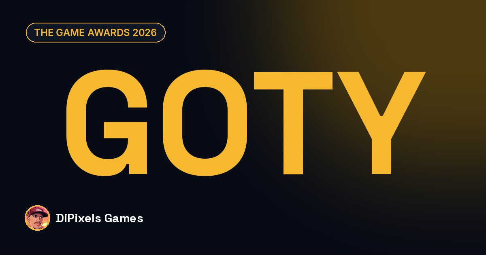

GOTY 2026: os 6 indicados a Jogo do Ano e o que cada um tem de especial

Os indicados ao The Game Awards 2026 saíram em 17 de novembro, e a categoria principal, Jogo do Ano, ficou com seis nomes de estilos bem diferentes: mundo aberto, terror, ação de artes marciais, espionagem, RPG de ação e um clássico refeito do zero.
A cerimônia acontece em 10 de dezembro, às 21h30 (horário de Brasília), com transmissão no YouTube, na Twitch e, pela primeira vez, no Disney+. Os indicados foram escolhidos por um júri de mais de 160 veículos de imprensa do mundo todo.
Os seis indicados
- Grand Theft Auto VI: o mais indicado da noite, com 8 indicações.
- Resident Evil Requiem: 6 indicações, e já levou o prêmio principal do Golden Joystick Awards.
- Control Resonant: também com 6 indicações.
- Phantom Blade Zero: 5 indicações.
- 007 First Light: a volta do James Bond aos games.
- The Legend of Zelda: Ocarina of Time: o remake do clássico de 1998 para o Switch 2.
Quem é o favorito?
No papel, o GTA 6 chega como favorito, pelo número de indicações e pelo tamanho do lançamento. Mas o Jogo do Ano nem sempre vai para o maior jogo. Resident Evil Requiem saiu em fevereiro, teve meses pra conquistar a crítica e já vem com prêmio na bagagem. E a disputa ficou mais imprevisível com dois remakes e continuações fortes na lista.
Clique em cada jogo acima pra ver o que ele tem de interessante, onde jogar e se vale a pena.
E você, qual é o seu GOTY? Comenta nos vídeos do canal DiPixels Games.